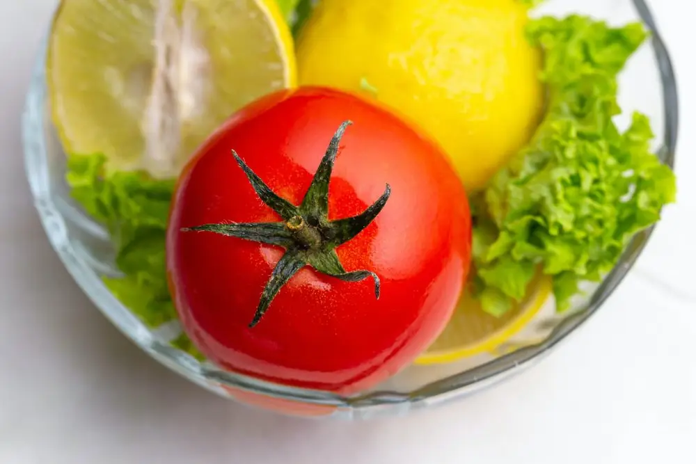
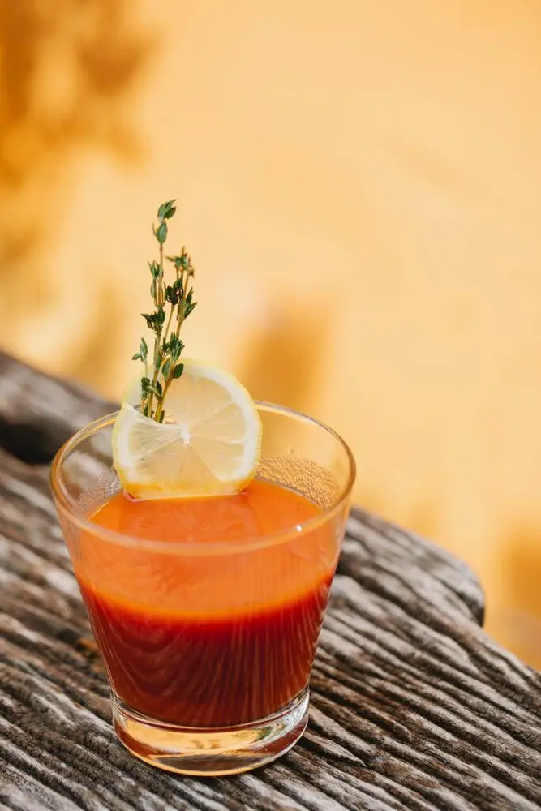

Articles / Recipes
How to make tomato lemon punch
2022-08-30 · News, Recipes

Original public content from Yen Chuan. Product claims and specifications remain subject to confirmation by the company.
When summer comes, nothing beats the heat better than a chilled, refreshing drink! While tomatoes might not have crossed your mind when it comes to summer drinks, they definitely deserve a spotlight in your lemonade recipes.

Lemons and tomatoes are a perfect match: Tart and tangy, but still with a bit of sweetness!
A dash of ginger helps to highlight the flavors and fragrance of these fruits beautifully, making them taste even better.
The result? A gorgeous, layered mix of sweet, tart and a spicy zing, which would leave anyone wanting for more!
With our tomato ginger syrup, making this drink can’t be easier! Check it out!

Now you can make this fabulous juice in three simple steps.
Sit back, take a sip and enjoy!